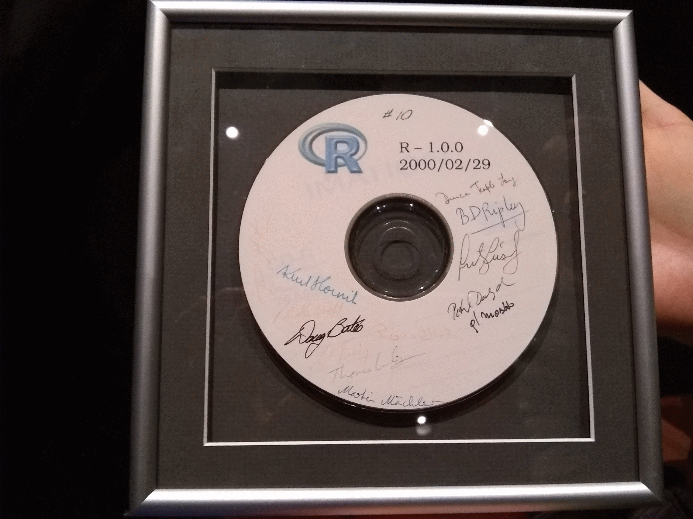
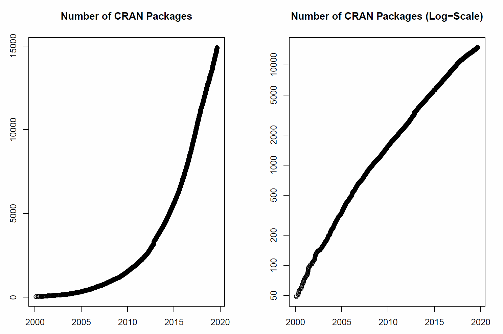
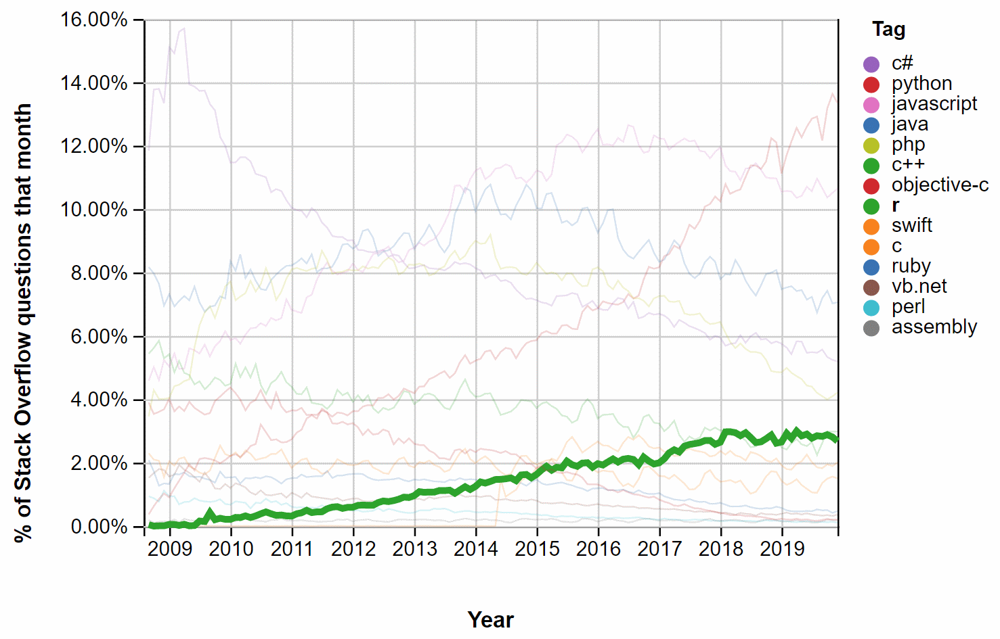

Créateurs
Robert Gentleman et Ross Ihaka dans les années 90 :

Source : https://www.stat.auckland.ac.nz/~ihaka/downloads/Otago.pdf
un environnement et un langage de programmation pour effectuer des calculs statistiques et créer des graphiques;
un logiciel libre : logiciel gratuit, distribué avec son code source, il peut être étudié, modifié et partagé librement;
un logiciel formé des composantes suivantes :
Typiquement, on utilise d’abord R pour faire de l’analyse statistique de données. On réalise donc en R les tâches suivantes :
manipuler des données;
appeler des fonctions préexistantes de calculs statistiques (estimation de statistiques, ajustement de modèle, etc.);
produire des graphiques;
rédiger des rapports d’analyse de données.
Plusieurs utilisateurs de R doivent un jour développer leurs propres fonctions de calcul statistique. On peut devenir un développeur lorsque :
On passe d’utilisateur de R à développeur R souvent sans même s’en rendre compte.
1990 - Au Département de statistique de l’Université d’Auckland en Nouvelle-Zélande, Ross Ihaka et Robert Gentleman (alors en année sabbatique de l’Université de Waterloo au Canada) ont l’idée de créer un nouveau logiciel statistique pour tester quelques idées dans leurs travaux de recherche.
1992 - Le langage est nommé R, car il s’agit de la première lettre des prénoms des deux créateurs et parce qu’il est décidé que le langage utilisera la syntaxe du langage S développé dans les Bell Laboratories par John Chambers et collaborateurs.
1994 - Une version initiale du logiciel est utilisée pour donner des cours d’introduction à la statistique et elle est distribuée sur internet. Il est décidé que R sera un logiciel libre.
Robert Gentleman et Ross Ihaka dans les années 90 :
Source : https://www.stat.auckland.ac.nz/~ihaka/downloads/Otago.pdf
1996 - Martin Mächler de l’École polytechnique fédérale de Zurich en Suisse se joint à l’équipe des R & R pour développer R, qui connaît de plus en plus de succès. Malgré tout, bien vite trois personnes ne suffisent plus pour gérer le flot constant de courriels reçus d’utilisateurs.
1997 - Le CRAN est créé par Kurt Hornik et Friedrich Leisch à l’Université technique de Vienne en Autriche. Il s’agit d’un dépôt informatique pour les contributions des utilisateurs (packages). Peu après, le « R core team », soit le noyau de développeurs de R, est formé.
2000 - La première version officielle de R est publiée à une date particulière : le 29 février 2000!
CD de la version 1.0.0 de R, autographié par les membres du R core team :

Source : Douglas Bates, photo prise lors du colloque R à Québec 2019. http://raquebec.ulaval.ca/2019/
Les membres du R core team sont typiquement des chercheurs en calcul statistique. Ils travaillent pour différentes organisations, souvent des universités, aux quatre coins du monde.
Depuis 2003, la fondation R amasse des dons et les utilisent pour maintenir des infrastructures et pour commanditer quelques travaux de développement. https://www.r-project.org/foundation/
Des conférences sont organisées et réunissent les développeurs de R ainsi que des utilisateurs de R. https://www.r-project.org/conferences/
R a aussi sa revue scientifique, The R journal (succésseur des R News). https://journal.r-project.org
R est en constant développement. Il est mis à jour environ 4 à 6 fois par année. La version courante de R (4.0.3) est téléchargeable sur le site web du projet R : https://www.r-project.org.
Il y a maintenant :
Note : Informations relevées le 14 janvier 2021.

Kurt Hornik, Uwe Ligges, Achim Zeileis. (2019). Changes on CRAN. The R Journal. Vol. 11 (1), pp. 438-441. http://journal.r-project.org/archive/2019-1/cran.pdf
Beaucoup de gens l’utilisent et en parlent sur internet.
L’environnement intégré de développement RStudio
(https://rstudio.com/)
et les packages du tidyverse
(https://www.tidyverse.org/)
contribuent à la popularité de R.
Savoir programmer en R est une compétence fréquemment demandée pour des emplois en statistique / science des données.
(https://github.com/ThinkR-open/companies-using-r)
Quelques statistiques sur la popularité de R : http://r4stats.com/articles/popularity

Source : https://insights.stackoverflow.com/trends, 14 janvier 2021.

Illustration de @allison_horst https://github.com/allisonhorst/stats-illustrations
Les caractéristiques de R sont particulièrement adaptées au monde de la recherche et de l’enseignement. Il est donc très utilisé dans les universités. Par contre, il comporte les limites suivantes :
Certains préfèrent utiliser un logiciel commercial, car :
Oui!
Ça pourrait vous permettre de décrocher un emploi.
Sur certains aspects, R surpasse ses compétiteurs (SAS, Python, etc.) :
https://github.com/matloff/R-vs.-Python-for-Data-Science
https://blog.rstudio.com/2019/12/17/r-vs-python-what-s-the-best-for-language-for-data-science/
Fox, J. (2009). Aspects of the Social Organization and Trajectory of the R Project. The R Journal. Vol. 1 (2), pp. 5-13. http://journal.r-project.org/archive/2009-2/RJournal_2009-2_Fox.pdf
Ihaka, R. (2011, April 20). The R Project: A Brief History and Thoughts About the Future [Présentation]. https://www.stat.auckland.ac.nz/~ihaka/downloads/Otago.pdf
Keeling, K. B. et Pavur, R. J. (2007). A comparative study of the reliability of nine statistical software packages. Computational Statistics & Data Analysis. Vol. 51, pp. 3811-3831.
Peng, R. (2018, 12 juillet). Teaching R to New Users - From tapply to the Tidyverse [Billet de blogue]. https://simplystatistics.org/2018/07/12/use-r-keynote-2018/
Thieme, N. (2018). R generation. Significance magazine, Vol. 15 (4), pp. 14-19. https://doi.org/10.1111/j.1740-9713.2018.01169.x